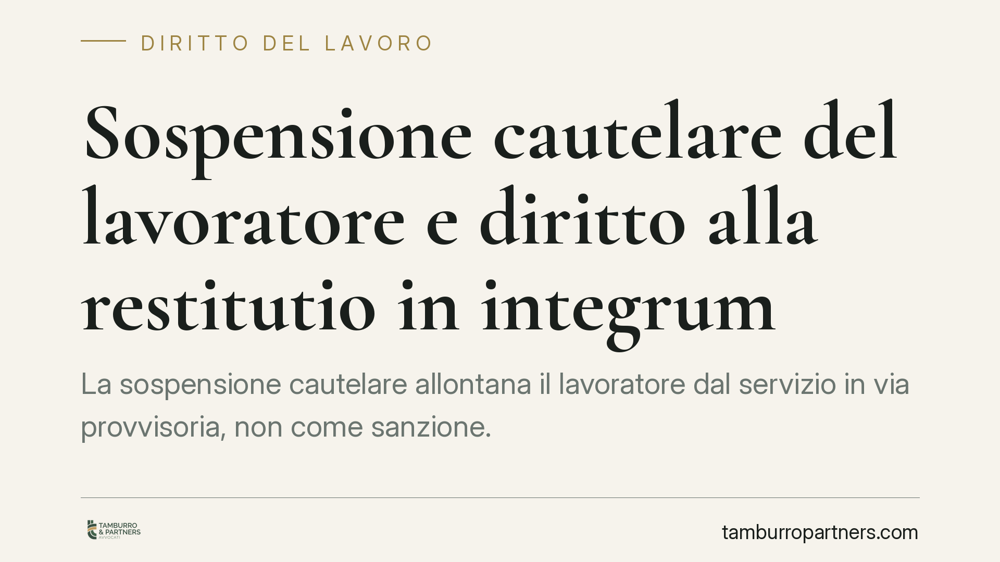

Sospensione cautelare del lavoratore e diritto alla restitutio in integrum
La sospensione cautelare allontana il lavoratore dal servizio in via provvisoria, non come sanzione. Se il presupposto viene meno, si apre il tema della restitutio in integrum: ripristino economico e professionale della posizione. Distinguere il piano cautelare da quello disciplinare è decisivo per datori pubblici e privati, che seguono regole in parte diverse.

Il quadro del problema
La sospensione cautelare è una misura conservativa e provvisoria: allontana temporaneamente il lavoratore dal servizio in attesa che si definisca un procedimento (penale o disciplinare), senza costituire di per sé una sanzione. Va tenuta nettamente distinta dalla sospensione disciplinare, che è invece una punizione irrogata all'esito di un procedimento e presuppone l'accertamento di un illecito.
La differenza non è teorica. Se la vicenda si chiude senza addebito – archiviazione, assoluzione, mancata conferma disciplinare – la sospensione cautelare perde la sua ragion d'essere e si pone il problema della restitutio in integrum: rimettere il lavoratore nella condizione in cui si sarebbe trovato se la misura non fosse mai stata adottata.
Il riferimento normativo, per settore
Pubblico impiego. La disciplina è più strutturata. La L. 97/2001 regola il rapporto tra processo penale e procedimento disciplinare, prevedendo ipotesi di sospensione cautelare obbligatoria e facoltativa e disciplinando gli effetti economici in caso di esito favorevole al dipendente. Il quadro va letto insieme al D.Lgs. 165/2001 sul lavoro alle dipendenze delle pubbliche amministrazioni e ai singoli CCNL di comparto, che fissano importi dell'assegno alimentare durante la sospensione e criteri di ricostruzione della posizione.
Lavoro privato. Manca una disciplina legale organica. I riferimenti sono l'art. 2106 c.c. (proporzionalità delle sanzioni disciplinari), l'art. 2119 c.c. (giusta causa) e, soprattutto, le clausole del CCNL applicabile, che tipicamente ammettono la sospensione cautelare in pendenza di procedimento e ne regolano durata, trattamento economico e conguaglio finale.
Su entrambi i piani, la giurisprudenza di legittimità ha da tempo consolidato alcuni principi: la sospensione cautelare non anticipa la sanzione, il procedimento disciplinare è autonomo rispetto all'esito penale e opera con standard probatori diversi (il giudice penale accerta la responsabilità penale oltre ogni ragionevole dubbio; il datore valuta la rilevanza disciplinare del fatto con criteri propri).
Cosa comprende la restitutio
La reintegrazione ha un doppio profilo.
Sul piano economico, comporta la corresponsione delle retribuzioni non percepite durante la sospensione, al netto di quanto già erogato a titolo di assegno alimentare. Secondo l'orientamento consolidato della giurisprudenza di legittimità, dalla somma dovuta va di regola detratto l'*aliunde perceptum*, ossia quanto il lavoratore abbia eventualmente guadagnato svolgendo altra attività nel periodo. Sulle somme maturano interessi e, dove ne ricorrano i presupposti, rivalutazione.
Sul piano professionale e giuridico, la restitutio impone di ricostruire la posizione: anzianità di servizio, progressioni economiche e di carriera, quota di TFR, effetti previdenziali. Il ripristino non si esaurisce nel pagamento di arretrati; deve neutralizzare gli effetti della sospensione sulla carriera.
Resta ferma l'autonomia del piano disciplinare: l'esito penale favorevole non obbliga il datore ad archiviare l'addebito se il fatto conserva rilievo disciplinare autonomo. In questo caso la restitutio può non spettare, o spettare solo in parte.
Implicazioni pratiche
Per il datore pubblico, il margine di discrezionalità è ridotto: presupposti, durata e trattamento economico sono in larga parte predeterminati dalla legge e dal contratto. Errori nella gestione della sospensione o nel calcolo della restitutio espongono a contenzioso e a responsabilità.
Per il datore privato, il perno è il CCNL: adottare la sospensione fuori dai casi previsti, o protrarla oltre misura, rischia di trasformare la misura cautelare in un provvedimento illegittimo, con obbligo di corrispondere le retribuzioni e possibili profili risarcitori.
Per il lavoratore, conta agire con tempestività: contestare i presupposti della sospensione, monitorare gli effetti sulla posizione e documentare le somme trattenute in vista dell'eventuale conguaglio.
Cosa fare in concreto
- Verifica i presupposti: prima di sospendere, controlla che la misura sia prevista dalla legge (pubblico) o dal CCNL (privato) e che ricorrano le condizioni.
- Riesamina tempestivamente: al mutare del quadro (archiviazione, assoluzione, esito disciplinare) rivaluta subito la posizione ed evita di protrarre la sospensione senza titolo.
- Documenta le trattenute: conserva prospetti delle somme non erogate e degli assegni alimentari versati, per gestire correttamente il conguaglio e la detrazione dell'aliunde perceptum.
- Valuta il piano disciplinare in autonomia: non far dipendere meccanicamente la decisione dall'esito penale; motiva la rilevanza disciplinare del fatto con criteri propri.
- Garantisci tracciabilità: verbalizza date, comunicazioni e provvedimenti, così da poter ricostruire con precisione anzianità e progressioni ai fini della restitutio.
---
Contributo informativo a cura di Tamburro & Partners - Avv. Giuseppe Tamburro. Non costituisce parere legale.
Ogni storia di lavoro ha i suoi tempi.
Se gestisci HR e vuoi un confronto su contenzioso, ispezioni o licenziamenti, scrivi allo studio. Ti rispondiamo entro un giorno lavorativo.